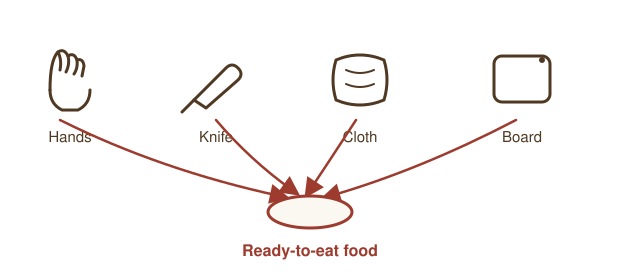
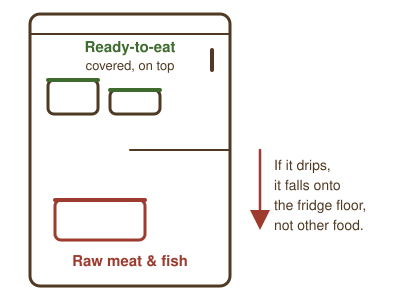

Hazards & Contamination
What this module covers
- The four types of food safety hazard
- Where contamination comes from
- Direct vs indirect cross-contamination, and why it spreads so easily
- Real touchpoints: hands, knives, slicers, cloths, boards, packaging
- Storing raw and ready-to-eat food safely
- Allergen cross-contact from shared equipment
- Physical and chemical contamination controls
- What to record and report when something goes wrong
Four types of hazard
- Microbiological: bacteria, viruses, moulds, yeasts. The most common cause of food poisoning, and the focus of Module 3.
- Physical: foreign objects: glass, metal, hair, plasters, jewellery, insects.
- Chemical: cleaning products, pesticide residue, allergens introduced by cross-contact.
- Allergenic: naturally occurring proteins that trigger a reaction in some people (Module 8).
All four can end up in food the same way: through poor handling, not just poor ingredients. A perfectly good piece of cheese becomes unsafe the moment it picks up something it shouldn't have.
Where contamination comes from
- People: unwashed hands, illness, hair, unclean clothing.
- Pests: rodents, insects, birds.
- Premises & equipment: poor maintenance, damaged surfaces, dirty utensils.
- Other food: raw food dripping onto or touching ready-to-eat food.
Direct vs indirect cross-contamination
Direct: raw food physically touches ready-to-eat food (e.g. raw chicken juice dripping onto salad below it in a fridge).
Indirect: contamination is transferred via a third party: hands, a knife, a chopping board, a cloth, or a work surface used for raw food and then not properly cleaned before touching ready-to-eat food.
Why indirect matters more in practice: direct contamination is usually obvious and easy to catch by eye. Indirect contamination isn't. A knife, a cloth, or a pair of hands can carry bacteria invisibly from one food to the next several times over a shift, with nothing to see and nothing to smell. That's what makes it the harder hazard to control, and why the rest of this module focuses on it.
Real touchpoints: where indirect contamination actually happens

Indirect cross-contamination isn't a rare event, it's built into the ordinary flow of a shift. Anything that touches raw or unwashed food and then touches something else can carry contamination forward:
- Hands: touching raw meat, fish, or unwashed vegetables, then handling ready-to-eat food, packaging, till buttons, or your own face, without washing in between.
- Knives: the same blade used to trim raw chicken and then slice bread or cheese without being washed and dried first.
- Slicers: one of the highest-risk pieces of equipment on a counter. A blade, carriage, and food guard used for cooked ham and then straight onto cheese, with only a wipe in between, can transfer bacteria and allergens alike.
- Cloths: a single cloth used to wipe up raw meat juice, then used again on a chopping board or counter, spreads contamination further than almost anything else, because it looks clean.
- Chopping boards: reused for a different food type without washing, or with ingrained knife-cut grooves that trap bacteria a quick rinse won't reach.
- Packaging: outer wrapping or delivery boxes that have been on a warehouse floor or delivery vehicle, then placed on a food-prep surface.
- Handles and touch points: fridge door handles, tap handles, slicer controls, and bin lids get touched constantly with unwashed or gloved-but-contaminated hands, then touched again by the next person.
Quick check
A cloth has just been used to wipe up raw chicken juice. Can it be used on a ready-to-eat counter after a quick rinse under the tap? (click to reveal)
No. A rinse under the tap doesn't clean or disinfect it properly, and a cloth that "looks clean" can still carry bacteria forward. Use a dedicated cloth for the ready-to-eat surface, and put the raw-food cloth into sanitiser or the wash.
What can go wrong: a realistic scenario
It's a busy Saturday. You trim a delivery of raw chicken, then wipe your hands and the board with the cloth hanging on your apron. Ten minutes later a customer asks for a sample of ready-to-eat paté. You use the same cloth to wipe the counter first, then cut the paté with a knife that was in the same drawer as the one you used on the chicken.
Nothing here looks wrong. No food touched raw meat directly, nothing was left out of the fridge, and the counter looks clean. But the cloth carried bacteria from the raw chicken to a ready-to-eat surface, and the knife may not have been properly washed between uses. This is exactly how indirect cross-contamination causes real outbreaks: through steps that feel too small and too fast to matter.
Preventing cross-contamination: what to actually do
- Use colour-coded chopping boards, utensils, and cleaning cloths (e.g. red = raw meat, blue = raw fish, yellow = cooked meat, green = salad/fruit, brown = vegetables, white = bakery/dairy). This isn't a single legally fixed scheme (different premises can set their own colours), but everyone on shift needs to know and follow the same one.
- Wash, rinse, and disinfect knives and slicer parts between different foods, not just at the end of a shift, especially between raw and ready-to-eat, and between different allergen-containing products.
- Use a dedicated cloth per task or colour zone, never one cloth for raw food and ready-to-eat surfaces. Store cloths in sanitiser solution between uses, not draped over your shoulder or apron.
- Store raw food below ready-to-eat food in fridges, in sealed, leak-proof containers, never loose or uncovered.
- Wash hands and change gloves between handling raw and ready-to-eat food, and after touching handles, bins, money, or your phone.
- Break down and check delivery packaging away from open food, and wipe down anything that's been on a delivery vehicle or warehouse floor before it goes near a prep surface.
Storing raw and ready-to-eat food together safely

Most fridges have to hold raw and ready-to-eat food at the same time, so separation is about arrangement, not just distance:
- Raw food goes on the lowest shelves, so any drips fall onto the fridge floor, not onto other food.
- Ready-to-eat and high-risk food (cooked meats, dairy, prepared deli items) goes on shelves above raw food, ideally in a separate fridge if you have one.
- Everything is covered or in a sealed container, so nothing drips, leaks, or is exposed to air from another shelf.
- Raw and ready-to-eat items are never stored touching each other, even briefly during a busy delivery put-away.
A delivery that arrives with raw and ready-to-eat items in the same crate should be separated immediately on arrival, not left together until there's time to sort it.
Quick check
A delivery crate arrives with raw chicken and a ready-to-eat cheese packed together. What do you do first? (click to reveal)
Separate them immediately, before anything else is put away. Move the raw item to the lowest shelf of the fridge and the ready-to-eat item above it, both covered or sealed. Don't leave them together "until there's a gap" to sort it.
Allergen cross-contact: contamination without any raw food involved
Cross-contamination doesn't require raw meat or fish. Allergen cross-contact happens when a trace of an allergen (nuts, milk, gluten, and others covered in Module 8) transfers from one food to another that's meant to be free of it, usually through shared equipment.
A cheese knife used across a walnut-coated cheese and then a plain one, a slicer used for a product containing gluten and then one that's meant to be gluten-free, or a shared board used for a nut-based product: none of these involve raw food at all, but all of them can make someone seriously unwell. Cross-contact needs the same discipline as raw/ready-to-eat separation: dedicated equipment where possible, thorough cleaning between products, and never assuming a quick wipe is enough.
Physical contamination
Common sources: fingernails, jewellery, hair, plasters, packaging fragments, pest droppings, broken equipment.
Controls: hair coverings, no loose jewellery, blue detectable plasters over cuts, regular equipment checks, and care when opening packaging near open food.
If you find a foreign object in food: stop, remove the affected food from sale or service immediately, don't just pick the object out and carry on, and tell a supervisor. If the source might affect other items (a chipped board, a damaged piece of equipment), that stock needs checking too before anything else is served from it.
Chemical contamination
Common sources: cleaning chemicals stored or used near food, pest control products, cleaning residue left on equipment.
Controls: store chemicals away from food and food-contact surfaces, follow manufacturer dilution instructions, rinse thoroughly where required, never decant chemicals into unlabelled or food-branded containers.
What to record and report
Contamination control isn't just about the moment it happens, it's also about the paper trail that shows you caught and dealt with it:
- Log any food withdrawn from sale because of suspected contamination: what it was, why, and what happened to it (usually disposal).
- Report a near miss too, not just a confirmed problem, for example a cloth mix-up caught before it caused harm. Near misses are exactly what your HACCP process (Module 7) exists to catch and correct.
- Tell your supervisor immediately if equipment is damaged in a way that could be a physical hazard (a chipped board, a cracked container), so it can be taken out of use.
- Record any cleaning or corrective action taken, such as a full strip-clean of a slicer after a suspected allergen mix-up, not just "cleaned as normal."
Summary
- Hazards are microbiological, physical, chemical, or allergenic.
- Cross-contamination can be direct or indirect; indirect is harder to spot because hands, knives, slicers, cloths, and boards carry it invisibly.
- Allergen cross-contact happens through the same shared-equipment routes, with no raw food needed at all.
- Colour-coding, separation, cleaning between tasks, and correct storage order are your main defences.
- Withdrawn food, near misses, and corrective actions should always be recorded, not just handled and forgotten.
1. What's the difference between direct and indirect cross-contamination? (click to reveal)
Direct is raw food physically touching ready-to-eat food. Indirect is contamination carried by a third party, hands, a knife, a cloth, a board, between the two.
2. Why is indirect cross-contamination considered harder to control than direct? (click to reveal)
Because it's invisible: a knife, cloth, or pair of hands can carry bacteria forward with nothing to see or smell, unlike direct contact which is usually obvious.
3. A colleague picks a shard of plastic out of a portion of food and serves it anyway, since "the rest looks fine." What should have happened? (click to reveal)
The affected food should have been removed from sale immediately, not picked over and served. The source (packaging, a chipped board, damaged equipment) needs checking too, since other items from the same source could be affected. The incident should be reported to a supervisor.
4. A slicer is used for a nut-coated cheese and then, a few minutes later, for a plain cheese with just a wipe in between. What should be recorded if this is caught? (click to reveal)
The near miss itself: what happened, that a full clean was then carried out before the slicer was used again, and that it was reported, not just quietly corrected and forgotten.